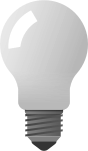

This project showcases how JavaScript can be used to make an interactive web page. Specifically, it showcases how a button can be coded to toggle an image between two states - on and off - when clicked.
JavaScript is a programming language that allows manipulatation of HTML elements to create interactive features on a web page. In this project, two JavaScript functions - turnOn() and turnOff() - are used to switch between two different images. These functions work by changing the src attribute of an img tag to point to a different image file.
By using JavaScript to create interactive features on a web page, content can become more engaging and responsive to user input. This project could be adapted to create image galleries, slideshows, and other types of image-based applications that respond to user actions.
Bulb image: by OpenClipart-Vectors from Pixabay located at alphabet-word-images-bulb-filament-1296212, with minor changes.